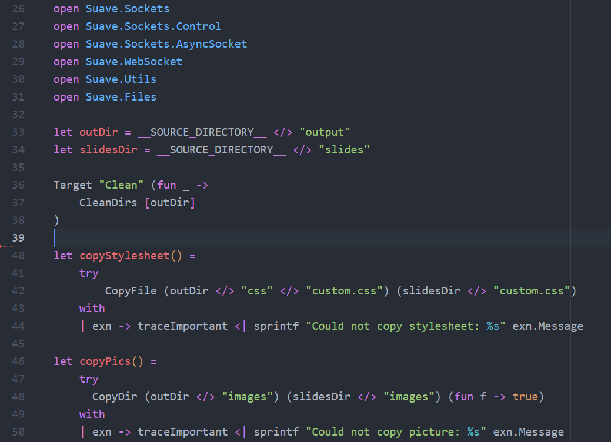
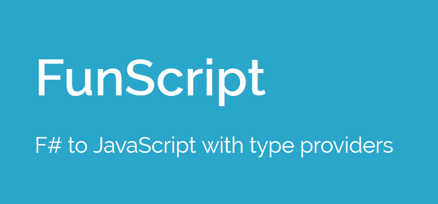

Multiple items
type ReflectedDefinitionAttribute =
inherit Attribute
new : unit -> ReflectedDefinitionAttribute
new : includeValue:bool -> ReflectedDefinitionAttribute
member IncludeValue : bool
Full name: Microsoft.FSharp.Core.ReflectedDefinitionAttribute
--------------------
new : unit -> ReflectedDefinitionAttribute
new : includeValue:bool -> ReflectedDefinitionAttribute
type ReflectedDefinitionAttribute =
inherit Attribute
new : unit -> ReflectedDefinitionAttribute
new : includeValue:bool -> ReflectedDefinitionAttribute
member IncludeValue : bool
Full name: Microsoft.FSharp.Core.ReflectedDefinitionAttribute
--------------------
new : unit -> ReflectedDefinitionAttribute
new : includeValue:bool -> ReflectedDefinitionAttribute
namespace Microsoft.FSharp
val min : e1:'T -> e2:'T -> 'T (requires comparison)
Full name: Microsoft.FSharp.Core.Operators.min
Full name: Microsoft.FSharp.Core.Operators.min
module Array
from Microsoft.FSharp.Collections
from Microsoft.FSharp.Collections
val init : count:int -> initializer:(int -> 'T) -> 'T []
Full name: Microsoft.FSharp.Collections.Array.init
Full name: Microsoft.FSharp.Collections.Array.init
val id : x:'T -> 'T
Full name: Microsoft.FSharp.Core.Operators.id
Full name: Microsoft.FSharp.Core.Operators.id
val create : count:int -> value:'T -> 'T []
Full name: Microsoft.FSharp.Collections.Array.create
Full name: Microsoft.FSharp.Collections.Array.create
val blit : source:'T [] -> sourceIndex:int -> target:'T [] -> targetIndex:int -> count:int -> unit
Full name: Microsoft.FSharp.Collections.Array.blit
Full name: Microsoft.FSharp.Collections.Array.blit
Multiple items
val string : value:'T -> string
Full name: Microsoft.FSharp.Core.Operators.string
--------------------
type string = System.String
Full name: Microsoft.FSharp.Core.string
val string : value:'T -> string
Full name: Microsoft.FSharp.Core.Operators.string
--------------------
type string = System.String
Full name: Microsoft.FSharp.Core.string
Ionide and the State of F# OSS

Jared Hester
https://github.com/cloudRoutine
@cloudRoutine
Maintainer
|
Contributor
|
What is Ionide?
Atom |
vscode |
|
|---|---|---|
Syntax Highlighting

Intellisense Tooltips

Autocomplete

Glyph Completion

Ionide FSI

Ionide Paket

Ionide FAKE

Code Snippets

Yeoman Generator

Ionide Internals

1: 2: 3: 4: 5: 6: 7: 8: 9: 10: 11: 12: 13: 14: 15: 16: 17: 18: 19: |
|
OSS for F# Success
This Presentation was brought to you by
FSharp.Formatting |
Suave |
FsReveal |
|---|---|---|
VFPT OSS Dependencies
- FSharp.Viewmodule
- FsXaml
- FsCheck
- FSharpLint
- Fantomas
- FsPickler
- FParsec
The F# OSS Community
Explore Projects
F# Community Incubation Space
http://fsprojects.github.io/
Meet the Devs
FPChat - Functional Programming Slack Team #fsharp
https://gitter.im/ionide/ionide-project
The Future of Ionide & VFPT
Ionide Roadmap
- FSharpLint Integration
- FsLab Integration
- Fix Integration
- More Code Snippets
- Path Completion